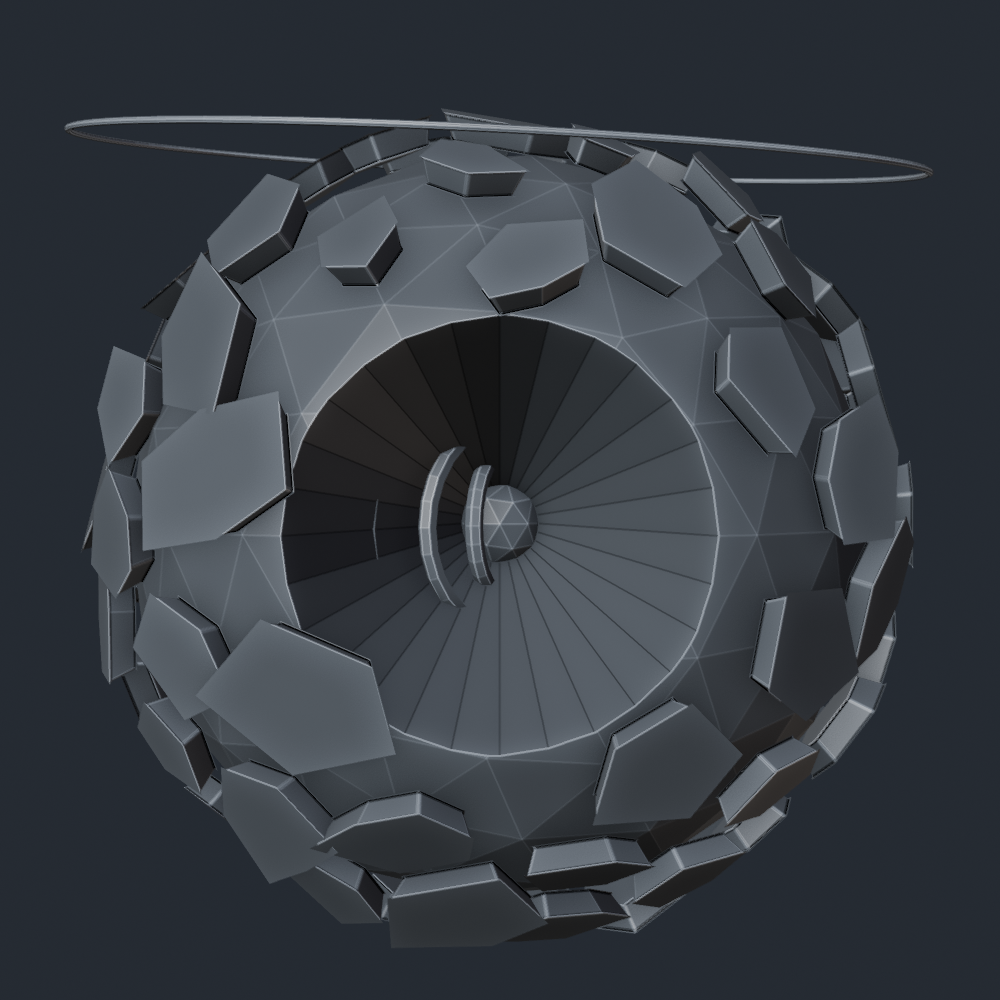
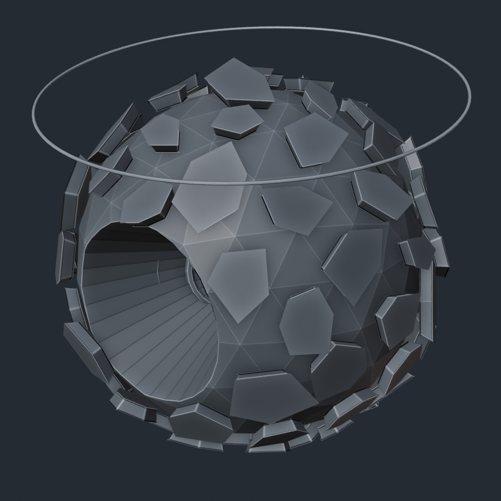
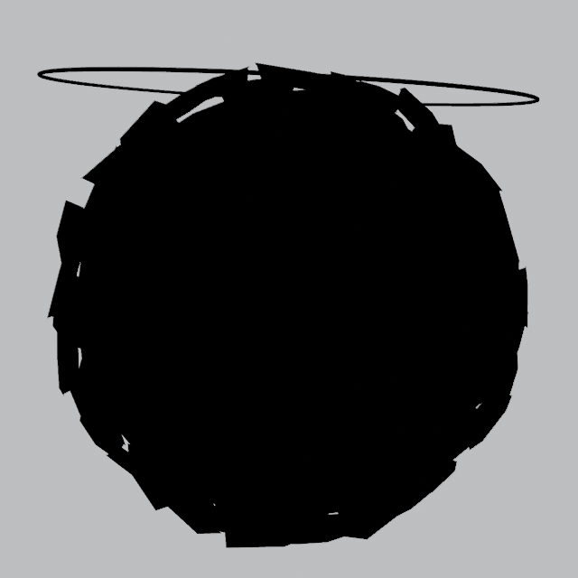
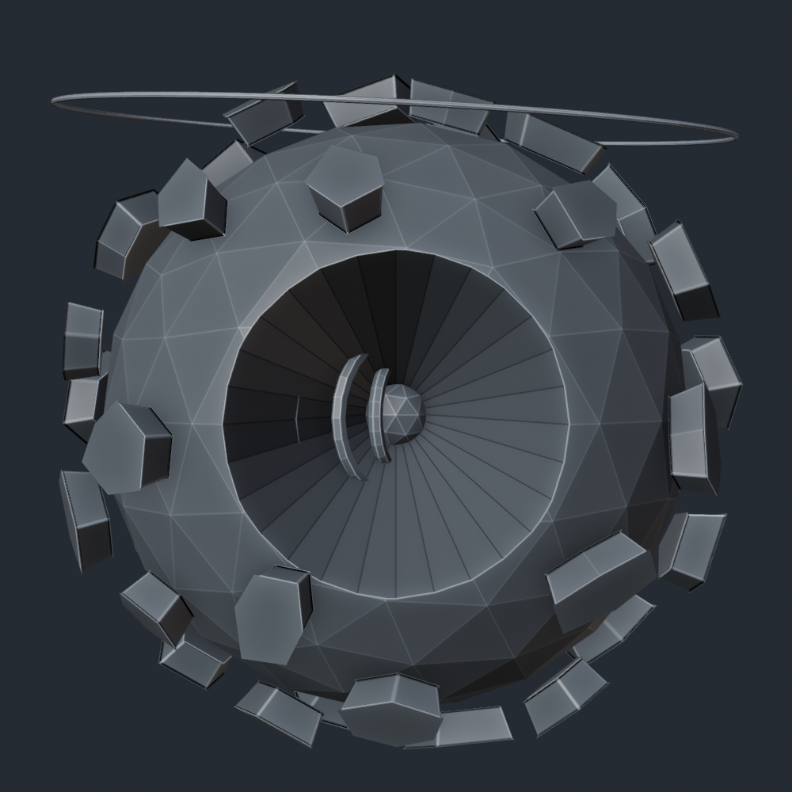
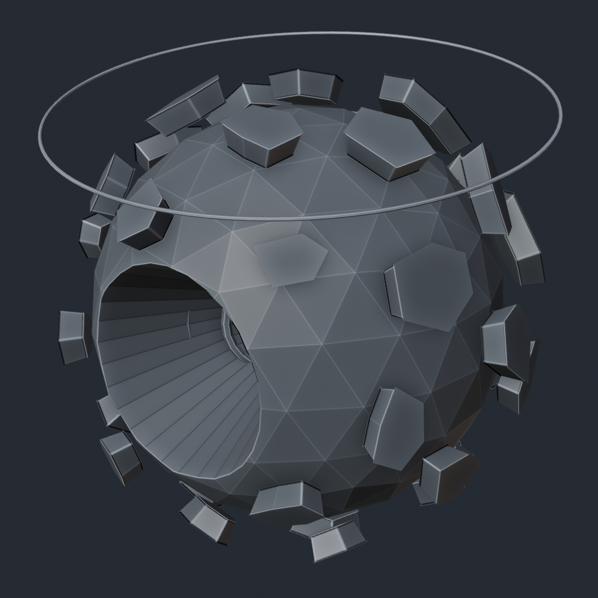
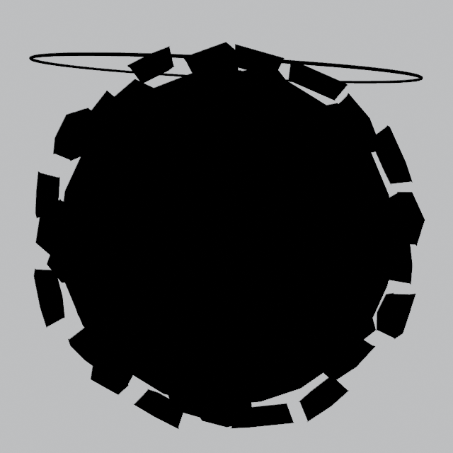
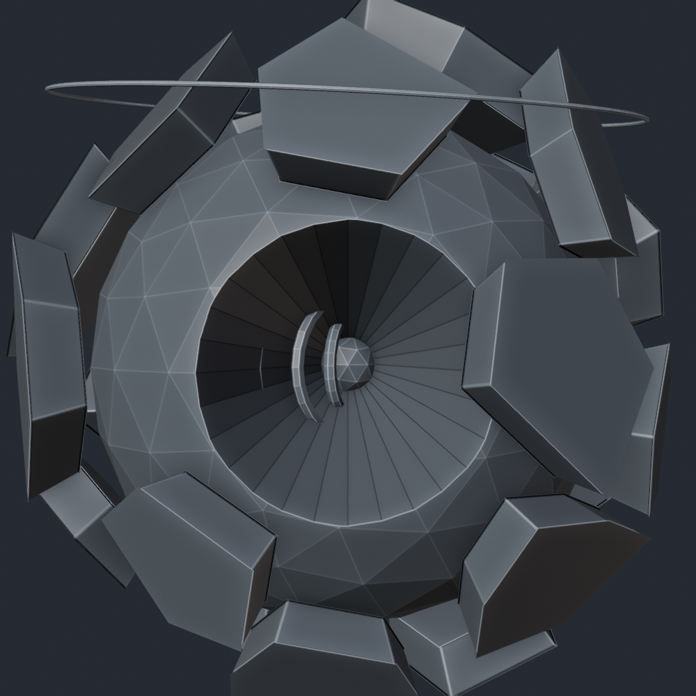
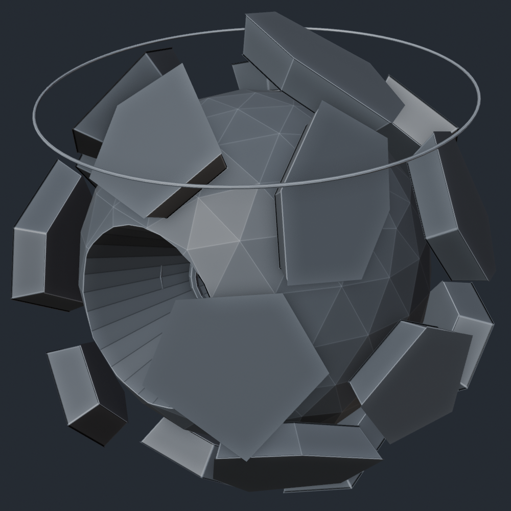
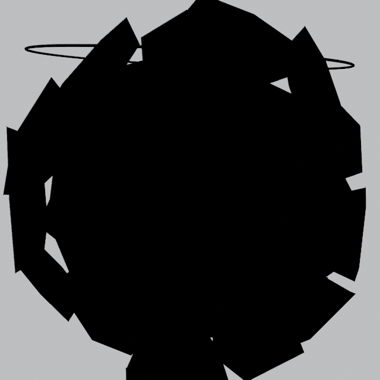

Same sphere, same cavity, same core, same halo, same cameras. They differ only in how the shell is broken up.
89 small plates, tightly packed, low relief. Densest and most literal to the board. Reads as geological encrustation.



42 plates in three concentric size tiers stepping toward the core. More deliberate, more architectural, cleaner shell showing between.



22 large fragments, wide gaps, deep relief. Most aggressive silhouette; the shell reads as broken open rather than encrusted.


